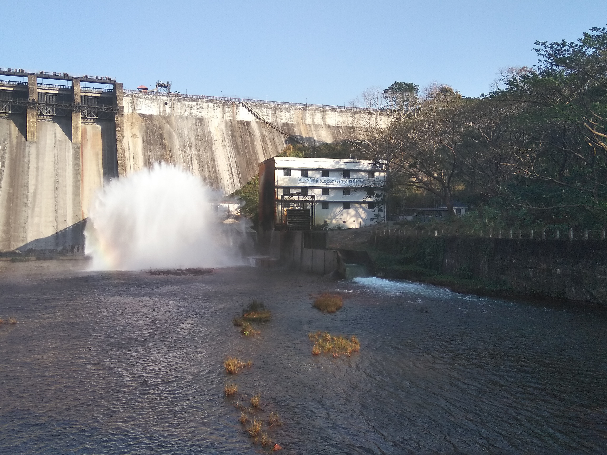
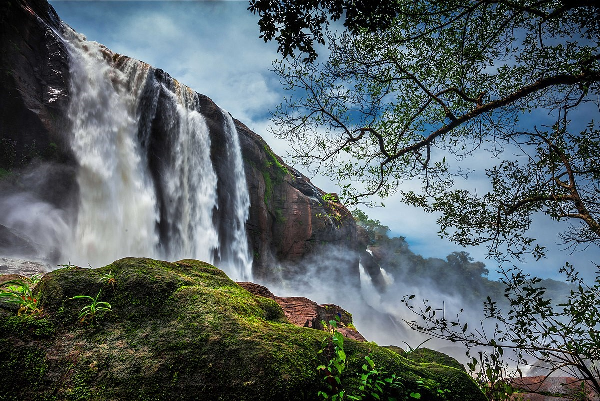

Thrissur district is home to over 9% of Kerala's population. Formed on 1 July 1949, Thrissur is known as the cultural capital of Kerala, and the land of Poorams. The district is known for its ancient temples, churches, and mosques.
How to Reach
Thrissur City is well connected and serviced by rail to all major cities in India. Thrissur Railway Station is an major railway head in South India. Daily trains are avaliable to leading cities like Mumbai, New Delhi, Kolkata, Bangalore, Chennai, Mangalore and Hyderabad and almost every part of India. Kerala's largest Railway Junction- Shornur Junction is just 33 Kms away from the city and is considered as Rail Gateway of Kerala, where all trains from and to Kerala touches.
Places to Visit
Poomala Dam
A natural reserve and tourist spot with an irrigation dam.
Athirapilly Water Falls
Athirapilly Water Falls is a fantastic picnic spot. Two amusement parks – DreamWorld and SilverStorm – are located nearby.

Poomala Dam
A natural reserve and tourist spot with an irrigation dam.p>

Athirapilly Water Falls
Athirapilly Water Falls is a fantastic picnic spot. Two amusement parks – DreamWorld and SilverStorm – are located nearby.